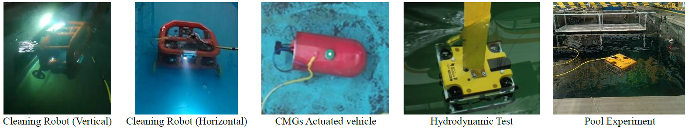

The Chinese University of Hong Kong, Shenzhen, China
October 2026 – Present
Postdoctoral Researcher, School of Data Science
Postdoctoral Advisor: Prof. Junfeng Wu

I am a Postdoctoral Researcher at the School of Data Science, The Chinese University of Hong Kong, Shenzhen, working with Prof. Junfeng Wu. I received my Ph.D. in Naval Architecture and Ocean Engineering from Huazhong University of Science and Technology in 2026, under the supervision of Prof. Guoyuan Tang.
My research focuses on nonlinear and geometric control, guidance and motion generation, and underactuated robotic systems, with a particular emphasis on underwater vehicles. My work combines theoretical analysis with experimental validation, resulting in first-author publications in Automatica, Control Engineering Practice, Ocean Engineering, and Measurement Science and Technology.
A central contribution of my research is the development of modular velocity guidance laws (VGLs) for 3-D trajectory tracking of underactuated autonomous underwater vehicles. The VGL acts as a guidance layer between a desired trajectory and a low-level motion controller, converting trajectory-tracking errors into feasible velocity and orientation references. By separating guidance from low-level control, the same guidance framework can be paired with different controllers, providing a reusable solution for 3-D trajectory tracking without requiring direct actuation in every translational direction.
My current research investigates capability-aware motion generation and control for robotic systems under actuation constraints and failures.
Postdoctoral Researcher, School of Data Science
Postdoctoral Advisor: Prof. Junfeng Wu
Ph.D. in Naval Architecture and Ocean Engineering
Integrated Master–Ph.D. Program
B.Eng. in Marine Engineering
First-author journal articles.
Chen H, Ye Z, Tang G, et al. A novel velocity guidance law for 3-D trajectory tracking of underactuated autonomous underwater vehicles: theory, simulations and experiments.
Chen H, Tang G, Xiao W, et al. K∞ function-based robust sliding mode control for remotely operated vehicles: Theory, simulations, and experiments.
Chen H, Tang G, Wang S, et al. Adaptive fixed-time backstepping control for three-dimensional trajectory tracking of underactuated autonomous underwater vehicles.
Chen H, Tang G, Huang Y, et al. Adaptive model-parameter-free nonsingular fixed-time sliding mode control for underwater cleaning vehicle.
Chen H, Ye Z, Tang G, et al. NDO-SMC for trajectory tracking of AUVs with unmeasured states: experimental study.
Chen H, Ye Z, Tang G, et al. Adaptive predefined performance control with application to autonomous underwater vehicles.
Chen H, Wang S, Xiao W, et al. Design and control of control moment gyros based autonomous underwater vehicle.
Chen H, et al. Orientation-reconstruction-based velocity guidance for three-dimensional trajectory tracking of underactuated underwater vehicles under persistent mismatched disturbances: A modular framework.
Designed the mechanical structure and steering law of a control-moment-gyro-actuated AUV and developed its guidance and control algorithms. Built a prototype and conducted torque-output, angle-tracking, and trajectory-tracking experiments. Results were published in Ocean Engineering and presented at ISOPE.
Participated in the development of an underwater cleaning robot and its automatic control algorithms. Designed a trajectory-tracking controller to address disturbances caused by high-pressure water jets, tether forces, and ocean currents, and investigated neural-network-based compensation for model uncertainties and disturbances. Results were published in Ocean Engineering and presented at IEEE OCEANS.
Developed disturbance-rejection control algorithms and constructed a 3-D experimental platform for underwater vehicles. Conducted experiments in a CNNC water tank using a NOKOV motion-capture system, achieving a reported dynamic accuracy of 0.05 m. The project also investigated fault-tolerant control under thruster failures in nuclear environments. Results included publications in Control Engineering Practice.
Experimental platforms used in research on underwater vehicle guidance, control, and fault-tolerant operation.

Reviewer for IEEE Transactions on Intelligent Transportation Systems, International Journal of Mechanical Sciences, Control Engineering Practice, Ocean Engineering, and ISA Transactions.
Email: hxuanchen@cuhk.edu.cn
Address:
School of Data Science,
The Chinese University of Hong Kong, Shenzhen,
Shenzhen, Guangdong 518172, China.
GitHub: github.com/hxuanchen